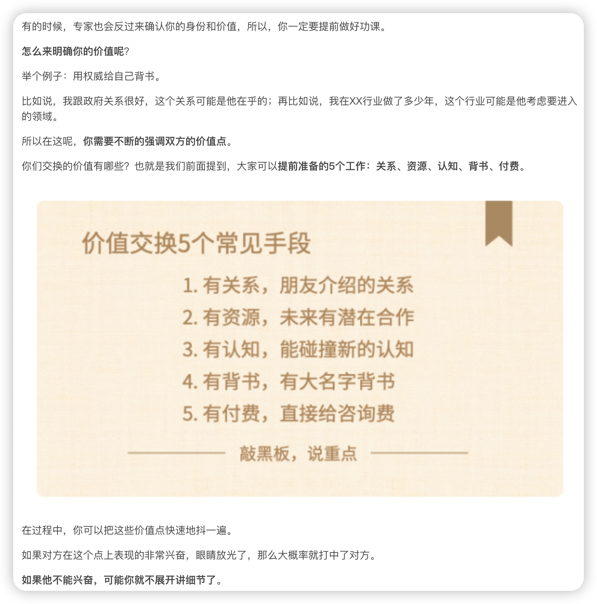

专家访谈黄金十步法
思考题
- 你曾经找到过一些专业的人士帮你把关业务么？复盘一下，他们对于你的业务价值有哪些？访谈的质量高吗？有什么决定性的帮助么？为什么？
- 你现在的业务遇到了什么样的难题么？比如对于模式和行业的理解不够，比如犹豫要不要投放，比如你判断不清楚你单元模型算不算跑通。你打算怎么解决的？市场上有谁认知很好，有可能拜访他们学习么？
第一步：梳理大盲区
缺少专业能力导致盲区
我们早期创业项目，因为专业能力不够，会导致有三类大的盲区，我们把它简称为”三维模型“
- 第一维 行业盲区 纵向来看，你懂不懂行业？比如日化产品/宠物/饮料/在线教育/餐饮/物流/金融，每一个行业从最早的生产、到渠道、到品牌、流量，都是一个完整的链条，你懂这个链条吗？
- 第二维 模式盲区 横向来看，你懂不懂你所在的模式？比如各个行业都有消费品/SAAS/社区/线下连锁/供应链/生产/媒体/O2O，很多行业都有这些模式，这些模式有哪些共性和常识？你懂这个模式吗？
- 第三维 能力盲区 除了纵着看横着看，就是内部能力。你如果想操盘这个项目需要一系列的必备认知，比如说预判能力/产品/运营/销售/BD/投放/调研/选址/文案/增长等等，你的团队认知够吗？你能懂这些专业能力吗？
所以说行业，模式，能力，这个就是三维分析法。任何一个行业，都可以用行业、模式、能力进行一次快速分解。
在一个课程调研的时侯，大家普遍遇到的难题：
很多时候，我们刚刚进入这个方向，这个时候我连找专家，建立基本认知都很难啊。
连基本的岗位判断，岗位审美，甚至连基本的基准值Benchmark都没有，我都没法判断啊，我太业余了。
所以，建议大家在访谈前，先把基本的调研工作做到位。
可以先把容易获得信息先快速学习一遍，然后再来做专家访谈。
这里面包含了一系列的调研方法：行业报告调研、竞争对手调研、用户访谈调研、上市公司的财报调研等等。
如果你的时间允许，建议你可以按照这个顺序，从简单到难，从公开到深度，依次进行调研：
《补齐专业能力的调研工具清单》
- 搜索引擎公开信息调研（基本能力）
- 行业报告调研调研专项：行业报告调研方法
- 财报&招股书调研调研专项：读懂上市公司报告
- 竞争情报调研调研必修2：调研黑客五部曲
- 用户访谈调研
- 专家访谈调研
如果将这些调研信息放到一维的象限里，按照获取难度来看，其实就是一个冰山模型
冰山最上面的是公开的信息，比如行业报告、搜索引擎文章、公司的财报等等，只要你稍微搜一搜，都能拿得到。这种获取难度比较小，执行要求也偏低，但是获取的价值也没那么高，往往都是一些公开的大路货。
很多人对创业调研的理解，往往只停留在这个层次上。
那么在冰山中间，第二层，就是半公开的信息，比如用户访谈，竞争调查访谈，不是那种坐在电脑面前动动手指，就能拿得到的，你需要去想办法，去到现场，去找用户，去用一些技巧和执行力，拿到一些信息。相对来讲，难度和价值都是在中等水平。
那么在冰山的最深层，就是专家访谈了。如果你能找到真正的专家，有能力从他们脑子里提炼出经验和判断，那么价值非常非常高，同时难度也是最大的。
在你看不懂一个行业/一个模式的时候，需要完成一个极其重要的判断的时候，如果你可以适时引入专家访谈，也许可以快速帮你完成一次高质量的判断。
第二步：起底专家库
很多人不愿意做专家访谈，总是觉得遇到了很多伪专家，聊了半天，也没什么收获。
那到底市场上谁可以算是我们业务的专家呢？
创业中，一定不要把资深用户误以为是行业专家
五大类最重要的行业专家
- 头部的业务负责人
- 资深的创业者
- 失败的创业者
- 二级市场的分析师
- 专业投资人/FA
如何排优先级呢？
- 有没有实操过：建过系统>见过系统的(前者的“建”是建立过系统，操盘过，知道决策的心路历程和里面的细节的坑；后者是见到过系统，见识的见，大概知道基本的玩法。如果你去做访谈，前者是明显好过于后者的。)
- 有没有提炼过：有过提炼过的>没提炼过的(有些专家本身喜欢研究和提炼，他们会总结一些方法和规律，甚至总结过很多基准值Benchmark。这时候如果你去调研，质量会很高，他会给你一个更框架性的判断，这种会比那种只言片语的经验，会有价值的多。)
- 有没有做成过：做成功过>没做成功过(这个很容易理解，如果他可以用历史的实践证明他的判断，这是最好的。而不是搜集一些只言片语的观点和经验，这样的话，质量就会低很多。)
每个人都有长板和短板，哪些问题可以找他们问，哪些问题其实他们并不擅长，建议你可以尽量绕行。
简单来说
- 关于行业的问题 适合去问行业老兵和VC；
- 关于模式的问题 你可以找类似模式的业务负责人去聊；
- 关于单点能力的构建 建议大家重点去找有实操经验的同学，比如你想做O2O需要线下BD能力，找专家之前，强烈建议你最好有一定认知、有一些基本的Benchmark再去找人，这个时候可以判断对方强到什么样的程度，有了一个基本的判断力。
第三步：给专家画像
怎么画像呢？你需要进一步思考一个问题：
我做这个业务，到底需要什么样的认知和能力，它们在谁的脑子里，怎么去连接，把它们挖出来？
这时候你就可以开始动手了，建议你可以按照上面方法，把你的业务按照多个维度展开，如果某一个维度存在巨大的盲区&关键假设，你就可以考虑找哪个专家。
在这送给大家三个关键词：要拆，要拆细，要务实。
第四步：建连接渠道
前三步都是前期准备
怎么有机会认识到更多的潜在专家呢？
其实，找专家的过程和招聘是非常类似的。
你需要构建一个专家的画像，建立一个专家库，优化每一步的转化率，判断哪些人是你要努力重点聊的。
通常我们说，突破圈层，认识高段位的人总是很难的，那么有什么套路呢？如何提升自己认识专家的能力呢？
第一类：日常持续收集
在没有对专家的强需求的时候，你可以日常持续地认识一些人，持续的去维护、管理你的人脉网络。
这里面有一些技巧，比如我看到有一个好用的方法，就是养成一个习惯，在约朋友聊天的时候，大家可以多带一个朋友来，有相互的朋友背书，也很容易聊起来，这样就可以慢慢地把你的人脉圈做大了。
还有一个重要的方法，就是加入垂直圈子，现在市场上有很多垂直的社群和媒体的圈子，比如消费品，2B、电商、流量投放，在线教育等等，你可以付一点钱，加入这些圈子，也可以快速认识很多同行。
第二类：靠朋友
当你想决定拜访专家的时候，你可以认真翻一翻你的通讯录，看一看你的同学圈/同事圈，有没有这样的人。
通常情况，你问问几个Social能力比较强的人，他们能不能帮你引荐。
这个往往就是最有效的方法，我回忆了一下，我最近一年认识的新朋友，有一半都是这么认识的，因为有朋友的背书，加上做了双方的介绍，所以很容易就快速地建立基本的信任。
第三类：快速建立连接
这个渠道比较容易理解，你可以通过网上搜索，临时建立一个沟通，或者花一些钱，就可以寻找一些专家。
如果你有预算，可以去在行约一些专家聊聊，或者你的预算再高一些，每年有几万/十几万级别的预算，可以试试专家网络这个渠道。他们非常专业，他们可以协助你找到一些大公司的高管，或者一些资深的行业操盘手。
除了付费，你可以锻炼在网上找人的能力，其实据我观察，大概30%-50%的行业专家，在网上都是有公开线索的。你可以动用搜索引擎、社交网络、微博、知乎、天眼查、邮箱、脉脉、领英这些工具，来找到他们的联系方式。
如果你可以像黑客一样搜索和建立连接，就可以找到很多人的联系方式。这里面有非常多的技巧和工具。
第五步：说服做沟通
不要以为“人脉技巧”可以无所不能，我们还是要实事求是一点，对这个事不要有过多的奢望。
就算我能拿到某些专家的联系方式，或者是简单聊两句，我如何和对方交换价值，让对方愿意给你一两个小时，给你做一次深度的讨论呢？
核心原则就是十二个字：最好身份对等，起码价值交换。
首先，如果身份对等当然是最好的。大家能在一个平面上交流，相互碰撞，相互激发。不然除非你是超级富二代，或者颜值爆表，大家都很忙，很少有人愿意花大块的时间，来帮你解决你的具体问题。
前半句身份对等很难，但是后半句是每个人都是可以通过努力做到的，就是做到价值交换。
简单总结一下，如何做到价值交换呢？有5个常见的价值交换手段，我们总结一下分别是：有关系、有资源、有认知、有背书、有付费。
中心思想就是反复问自己三个问题：
- 对方目前在做什么 你有没有手里的资源是对方想要的？
- 对方可能缺什么 你有什么专业的认知，可能跟对方平等的沟通和分享吗？
- 对方现在在乎什么 你能够有一些大的品牌，我们叫BigName做背书么，可以增强对方对你的信任么？
这个就是很重要的切入点，是你做沟通很努力要跟对方交换价值的抓手。
要不要用虚假身份
那么我们在调研的时候要不要用假装身份呢？这个看你的具体问题吧，如果在不触犯基本的法律和道德底线的情况下，你来判断真诚和假装身份哪个更容易帮你解决问题吧。
有一些情况，用一个假装的身份，就是最简单最直接的方法；而有些沟通呢，需要你非常真诚地把你的问题抛出来，才能够完成沟通。
希望大家自己判断吧。
第六步：认真做功课
不提前做功课的瞎聊，是非常浪费彼此时间的。
所以，我想重点强调一句话：专家不是用来帮你做基础科普的，你有了一定认知，是用来帮你确认和交叉验证的会更好。
你有盲区没问题，但是专家不能帮你从0开始入行和科普，你不要找大学教授问幼儿园的问题，你不要想着专家能够给我讲一讲百度百科的知识，可以带我入行。
专家更多的是用来帮你确认和交叉验证的。
所以提醒大家，公开信息的研究一定要往前放，专家访谈争取往后放。
百度百科里有的，争取不要问；
知乎讨论里有的，尽量不要问；
基本的认知概念，也尽量不要问。
所以，在聊之前，至少花两三个小时，做一次完整的功课准备，如果，他对你真的对你很重要，甚至花五个、十个、二十个小时都不为过。因为准备越充分，后面沟通质量越高。
专家访谈功课准备清单
分为四大步骤
- 调研履历
- 做好功课
- 明确目标
- 准备模型
每个步骤有一些执行的关键点，大家如果准备的话可以把这个东西当成checklist用来指导自己的调研前准备。
调研履历，准备对方的关键信息
- 看一看对方擅长什么，不擅长做什么。专家通常都是单点专家，通常不是全能。所以不要奢望他能解決跨领域的各种问题。比如，如果对方是投资人，你可以直接调研一下他们最近基金投了什么项目，说明他最近关注这个赛道很多，很专业，这也一个见面的时候很好拉近双方距离的一个打招呼的方法。
- 你需要评估对方的专业度。这个比较难啊，所以，我建议大家提前准备那么两、三个问题来评估对方。如果他们的答案特别离谱，那不好意思，我觉得你后面的就不用聊了。所以如果你实在拿不准，能不能提前准备两个问题来试试水。
- 就是他需要什么，认真考虑一下你们可以交换的价值。在访谈过程中，来凸显出你的价值，能够把你们拉到一个尽量平等的对话高度，能够拿到一些高质量的结果。
做好功课
怎么做，你没做过全网公开的信息调研，你最起码应该了解基本的概念和市场上的玩家吧。
把你调研出来的数据，和你自己商业模式跑过的数据整理清楚。然后整理一下你具体的困扰。
明确目标
就是这次讨论你究竟想讨论什么？最好准备一个大纲。
最糙咱们也应该准备一个问题的 top 3，就是前三个关键问题。最重要的三个话题究竟是什么？哪些问题是现在问？哪些问题是以后再问？尽量就在这想清楚，这个问题清单越聚焦越好。
准备模型
知道围绕什么样的话题展开。
为什么说要准备一个模型呢？
因为我们教研团队平时在做课的时候会聊各种各样的专家。在过程中，我们有一个非常大的困扰，就是大家往往没法在一套话语体系里对话。
什么意思，就是大家在讨论问题用着不同的思维模型讨论问题。
比如，你和投资人讲商业模式能不能跑通。你一个劲说我现在已经有用户愿意买单了，每个月我收入是多少，每个月可以卖多少单，
但是对方就一直在问你的单元模型是怎么算的？如果你没有算过这个单元模型，那么你们俩大概率就聊不下去。两个人不同频，这种讨论是很难有结果的。
掌握关键假设、预判、单元模型、融资等基本行业专家和高手们的共识，可以帮大家快速提升沟通效率。
第六步做好功课，下面就可以准备约对方了
第七步：选合适场景
线下
产品有一个基本的原则，就是做任何产品设计的时候，模仿真实的场景很重要
怎么理解呢？比如说，我做一个假的页面去测试用户，你需要让用户看到的页面越仿真，得到的数据越能接近真相。
所以不管大家是不是产品出身，希望大家也可以培养这样的意识。
线上
可以把竞品和自家产品app下载下来，然后在访谈的时候直接打开手机，不做访谈，直接指着这些app去分析它们的用户体验。
而不是说，我们就约一个会议室，约一个咖啡馆，说，李总您好，我想学一学产品设计，你能给我讲一讲你的经验吗？有什么心得？有什么注意的点吗？
你能理解这两种情况真正的区别吗？
所以总结一下：用一个对方非常熟悉，非常擅长的场景，努力地去激发对方，唤醒对方，更容易引发高质量的探讨。
总结
找到合适的场景，本质上就是去调集周围的环境来提问，而不是只由你来提问。
你要让他还原到真实的场景，激发他脑子里最高价值的判断。这是很重要的一个提问的技巧，甚至你都不用提问，他就直接全给你说了。
这个就是场景的价值。
这也是很多创始人往往不会注意的事情，所以希望大家能够开始有这个意识。
第八步：破冰建信任
见到专家第一句说什么
- 玩法一：60秒内快速破冰，把双方拉到一个良好的沟通体系里面。
- 可以在见面时真诚的夸奖对方，讲一讲对方的专业度和行业地位。
- 让对方感受到被尊重，比如：用一种比较弱的崇拜的方式说，听某一个朋友（提两个名字）提起你，这样就很容易快速地建立认知；
- 可以用人情网络快速拉近两个人的关系，比如：你们对方都是同一个学校/家乡/都做过xx领域；
- 如果是线下见面的话，如果你已经有一些线下的实物产品，甚至可以带个小的伴手礼。
- 玩法二：明确价值，让对方信任我
 - 玩法三：看情况评估，判断对方长板
- 提前准备一些细节，来交叉验证，看看他的判断力。(比如：你了解到了这个行业的增速和集中度，你可以问一问他的观察和判断。如果你发现他回答的明显不靠谱，那么你可以初步判断，他不善于做行业的宏观分析，那么你可以去聊一聊实操和业务细节。)
- 来试着问一下对方的背景，明确对方的核心能力和边界。(比如说：你可以问一问对方操盘过的项目，核心难点在哪儿？这个基本上就是他的主要经验。对于那些他听来的、书上看来的，你可以少问一些。所以，这些重要的问题如果他回答不好的话，那么可能他给到的信息参考价值就要大打折扣了。)
第九步：做专业探讨
探讨，是一个双向的平等对话。大家对一个问题平等地发表自己的观点，相互碰撞产生火花。这是一个思辨的过程，也是input+process，就是输入+处理的过程。
平等对话，说实话对大家的要求非常高，这就是为什么我们一直强调，你要提前做好功课。
所以，怎么做到平等地探讨呢？
其实背后有三条关键的原则。如果你可以抓住这三个关键点的话，那么就可以有一个高质量的碰撞了。
要多问擅长，少问大而全
60分合格线：多去问对方擅长的点，少问大而全。
比如，有些创始人约到了投资人，一开口就问：你觉得这种模式能不能降低获客成本啊？这个行业你觉得现在还能不能做啊？
这种问题，没有任何的前提条件，没有背景信息。如果本着一个负责任态度，我实事求是地就给你一个答案：不知道。而且，这种情况下，即使专家给了你答案，也没有太大的意义啊。因为前提条件不明确的话，答案并不一定适用于你的情况。
所以，我们在探讨的时候，一定要把问题聚焦在单点问题上。
专家都有偶像包袱
很多的专家，只要你敢问，专家就敢答。即便，他并没有那么懂。
大部分人，都会有偶像包袱，都会把问题转化为自己擅长的部分，然后丢给你一个答案。
比如，如果我是个擅长组织建设的专家，那么你问我创不创业问题，方向选择的问题，业务测试的问题，融资的问题，只要你敢问，我一定敢答。
所以，如果遇到了一个专家，敢于说“我不知道，咱们能不能换一个问题”，真的，你应该珍惜他，他真的是在用一个对彼此负责任的状态，在跟你探讨。
要知道，专家一定是在某一个专业的单点能力，很专业就很好了。没有人是所有都懂的，这个不可能。
所以大家一定要认识到，专家一定是在专业单点能力上，而不是在整个人都是极度专业的。
每一个专家，在90%，甚至99%的话题上都是不专业，是业余的，是入门的，是不值得你去深聊的。
希望你能有一个意识，你要努力找到专家最擅长的那10%或者1%，深入挖掘，展开细聊。
切记，不要用一套问题去问所有的人，尤其这种“看不看好我这个模式”，这种大而全的问题。
对方靠什么吃饭，你就问他什么
比如说投资人，他们吃的什么饭，投资判断，对吧？所以你与其去问他怎么做业务，不如问他业务做到什么样的程度才有可能拿到钱，不如问他这个细分赛道的窗口期还在不在，他就是靠这个吃饭的。
需要自己做判断，你要从这次的沟通里面，到底想收获到什么？
能做到多问擅长，少问大而全，那么就能60分合格了。
要多深挖信息，少问怎么看
良好线70分：要多深挖信息，少问怎么看。
慢慢把精华从对方脑子里抠出来
尤其，一些传统行业的人，其实他们有着大量的民间智慧，但是他们可能是没有结构化过的，零散的，不会很好表达的。
如果你可以训练一个能力，就像挤牙膏一样把信息从他们脑子里一点一点地挤出来，就能得到很多钻石一样宝贵的经验。
此外，希望你在做专家访谈的时候，多去问事实，问定量，问细节，问逻辑。
要多做推理，少关注结论
优秀线80分：要多做推理，少关注结论。
最后一个跟上一个有点像，更上升到逻辑学甚至哲学的层面。
前面我们说了很多的调研方式，比如行业报告，调研竞品，这些基本都是单向输入。
专家访谈最宝贵的地方，在于是可以双向交流的。
你可以通过交流来完成一个探讨式的判断，而且能够不断地找到背后的原因和为什么。
所以，希望你可以利用好这样双向交流的机会，带着一个批判性的思维去和专家探讨，而不是一味地接受结论。
- 可以多挖一挖背后的逻辑，可以较真，但是不要抬杠、更不要辩论！
- 建议访谈时，多用推演，多去推理结论，少做类比，少直接关注结果！！
关于80分的批判性思维，还是送给大家四个词吧，你访谈的时候去重点体会：问前提，问推理，问意外情况，问底层原因。
总之，专家访谈的过程，就是对自己项目不断剖析的过程。
专家访谈几点Tips
在现场访谈环节，给大家一个访谈要点的建议清单吧。
- 访谈后建议做一个备忘，细节笔记要记下来。
- 如果条件允许，建议可以录音备忘。
- 访谈后询问是不是还有可以介绍的人，比如在介绍两个朋友。
- 对于对方的帮助，表示直接真诚的感谢，感谢他的时间。
- 如果判断有价值，建议保持一个长期良好沟通的语境，比如约下次换在你的公司见。
- 如果想保持沟通，可以说，我们公司是有咨询费用的，500-1000的红包，未来保持联系。
第十步：交叉拿结果
两次交叉验证
- 前期做功课的时候就可以完成很多纠偏工作: 比如你的一些关键的判断，市场有很多的数据，不同的数据之间是不是有矛盾呢？能不能通过一些案头工作预先完成判断，把筛选后可靠的信息，再去跟专家聊做二次确认。
- 从专家那里拿到的信息，当你拿不准的时候，怎么做呢？能不能回来再做一次准确的校对？
没有逻辑和交叉验证过的信息，我可以知道，但默认不信。
我只会相信经过验证的信息，将它吸收进自己的体系里，确认不了的信息就让它在外边先躺着，持续观察，持续研究，直到某一天，可以被确认。
总结
- 不是交个朋友，而是价值交换。
- 不是收集观点，而是收集事实。
- 不是调研问题，而是验证假设。
- 不是辩论比赛，而是深入探讨。
- 不是单向采访，而是双向互动。
专家访谈最好是带着关键假设，带着要解决的问题去问，而不是去纯粹地交朋友，而是去碰撞想法。
专家访谈的重点从来不只是积累行业人脉，而是获取行业认知。不是找厉害的人去聊天，而是带着问题去拿到答案。
总结一下：今天课程最关键的12个字，带问题，有体系，拿答案，不盲信。
专家很难给你直接指路，更多的是给你一些关键的数据和判断。让你可以自己做出更优的选择。
所以，到底要往哪儿走还是要靠你自己。